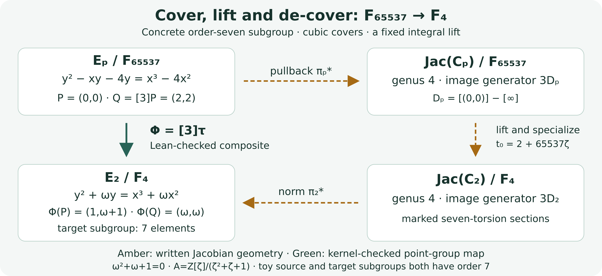

15 November 2026
The construction transfers an order-seven subgroup from a prime field with 65,537 elements into a binary field with four elements, through a cubic cover, a marked-section lift, and a norm. The target logarithm is recovered by enumerating seven multiples. The source subgroup also has order seven: this is a toy existence construction. [pcc:unverified]

The source and target equations are
\[ E_p:y^2-xy-4y=x^3-4x^2,\qquad E_2:y^2+\omega y=x^3+\omega x^2, \]
with \(\omega^2+\omega+1=0\). The source generator is \(P=(0,0)\) and its challenge is \(Q=(2,2)=[3]P\). The target generator is \(G=\Phi(P)=(1,\omega+1)\) and its challenge is \(T=\Phi(Q)=(\omega,\omega)\). For every integer \(k\), the Lean endpoint checks
\[ T=[k]G\ \Longleftrightarrow\ Q=[k]P\ \Longleftrightarrow\ k\equiv3\pmod7. \]
Both the chosen target generator and the source generator have exact order seven. This is the requested “something weaker” alternative; no GHS vulnerability or large-prime-order attack is claimed. [pcc:unverified]
Put \(b=t^3-t^2\), \(c=t^2-t\). The common elliptic family and its cubic cover are
\[ \mathcal E_t:y^2+(1-c)xy-by=x^3-bx^2, \qquad \mathcal C_t:v^2+(1-c)u^3v-bv=u^9-bu^6. \]
The map is \(\pi_t(u,v)=(u^3,v)\). Its affine coordinate algebra is \(R_E[U]/(U^3-x)\), with a basis of length three checked in Lean. At \(t=2\) it gives the source above; at \(t=\omega\) it gives the target. Use the fixed integral model
\[ A=\mathbb Z[\zeta]/(\zeta^2+\zeta+1),\qquad t_0=2+65537\zeta. \]
Its two ring specializations send \(t_0\) to \(2\) and \(\omega\). The receiving field on the
65537-side is \(\mathbf F_{65537^2}\),
but the reduced model and all seven marked points descend to the
original \(\mathbf F_{65537}\). Both
specializations and their nonzero discriminants are checked in
CoverIntegralLift.lean. [pcc:unverified]
The marked section \((0,0)\) has multiples \((b,bc)\) and \((c,b-c)\) at scalars two and three. The integer-polynomial relations \(b^2-bc-c^3=0\) and \((t-1)(b-c-c^2)=2c^2-bc-b+c\), checked in Lean, give \([2]([3]\mathcal P)=-\mathcal P\). Thus the seven marked sections provide the cross-characteristic lift on the chosen subgroup. This lift is limited to those seven sections; its existence does not supply an efficient lift for an arbitrary large-order subgroup.
On either cubic cover, the ramification indices above \(P\), \(-P\) and \(O\) are three. Riemann–Hurwitz gives genus four. If \(D=[(0,0)]-[\infty]\), then \(\pi^*(P-O)=3D\) and \(\pi_*D=P-O\). Lift and specialize the seven multiples of \(3D\) through the fixed model, then apply the target norm. The result is \(\Phi=[3]\tau\), where \(\tau([n]P)=[n]R\). Since \(3\) is invertible modulo \(7\), the norm retains the subgroup. These genus, Jacobian and specialization steps are the written geometric proof; the full Jacobian functor is not formalized in this project. [pcc:unverified]
Lean checks the field cardinalities, actual elliptic points, orders,
finite-free cubic cover algebras, affine cover equations, common
integral-model ring maps, the scalar homomorphism and its seven-row
table. Raw proof receipts and four identity.certificate/v1
records are retained. Claims PCC-20261115-1148a8 and
PCC-20261115-97a477 remain unsigned pending the
repository’s independent process. [pcc:unverified]
The full seven-row coordinate table, geometric derivation and
formalization map are in COVER-CONSTRUCTION.md and COVER-PROOF-MAP.md. Source modules are CoverDecodeExample.lean and CoverIntegralLift.lean. The pinned
environment is Lean 4.24.0 / mathlib v4.24.0. Run
lake build and lake env lean AxiomAudit.lean;
the unchanged repository proof gate audits the complete example project.
No performance measurement is reported.